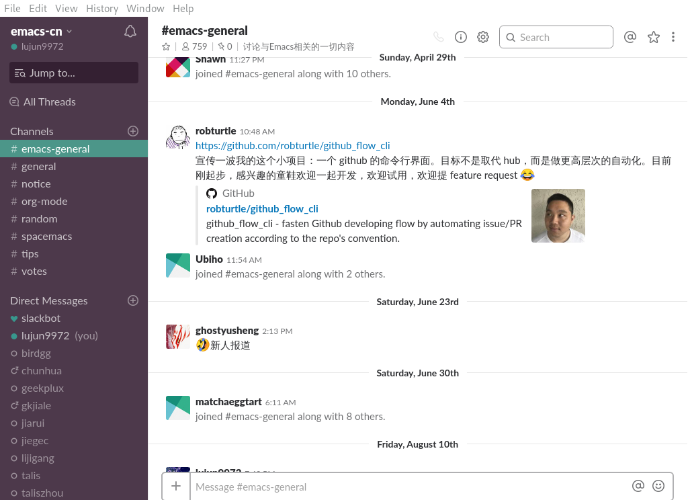

更改slack-desktop的显示图标
slack-desktop是一个用Electron开发的slack客户端应用。
pacman -Ss slack-desktop
archlinuxcn/slack-desktop 3.3.1-1 [已安装]
Slack Desktop (Beta) for Linux

默认情况下这个应用会在任务栏上显示一个反 # 字型的图标,比如 正常情况下显示的是 当有未读消息时显示的是 当有人直接发消息给你时显示的是
不过你可以很方便的对其进行修改，这些图标其实都是存放在 /usr/lib/slack/resources/app.asar.unpacked/src/static 目录下的png文件
分别对应的是 slack-taskbar-rest.png, slack-taskbar-unread.png 和 slack-taskbar-highlight.png
因此，你只需要用自定义的png文件覆盖这些文件就行了。
比如你想让slack-desktop在有消息来时不做提醒，也就是不改变任务栏上的图标，那么可以这么做
cd /usr/lib/slack/resources/app.asar.unpacked/src/static sudo mv slack-taskbar-unread.png slack-taskbar-unread-backup.png sudo cp slack-taskbar-rest.png slack-taskbar-unread.png cd /usr/lib/slack/resources/app.asar.unpacked/src/static sudo mv slack-taskbar-highlight.png slack-taskbar-highlight-backup.png sudo cp slack-taskbar-rest.png slack-taskbar-highlight.png